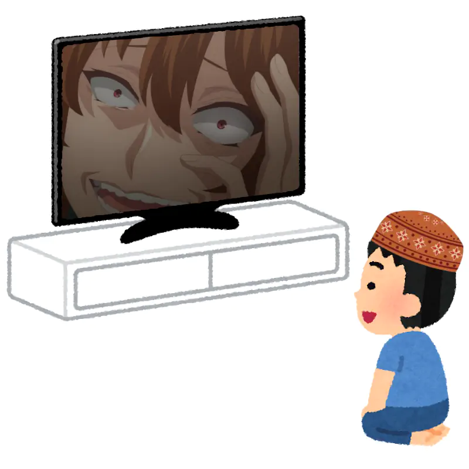

Japanese roadmap
Примечание: Обратите внимание, что эта статья ещё не переведена полностью. Если вы хотите помочь, присоединяйтесь к нашему сообществу и создайте pull request на GitHub.
In the following articles you'll find out how to go through the learning steps. Continue reading this site for detailed instructions. Below is a quick overview.
Laying the ground work
-
Build a Japanese Immersion Environment. Start consuming untranslated native Japanese content actively and passively. For example, watch anime in Japanese. This is the first and the most important part.
Initially, avoid the consequences of premature reading, only immersing in audio-visual content, such as anime, movies, dramas, TV-shows.
-
Choose your AJATTer name. My AJATTer name is, as you probably guessed, Tatsumoto Ren (or Ren Tatsumoto). A friend gave it to me after seeing how much immersion I did when I was a beginner. It's a good idea to have a more experienced AJATTer give you your AJATTer name, but it's also fine to make up your own.
-
Set up a consistent sleep schedule.
-
To improve your concentration and attention span, start meditating 5 minutes a day, first thing in the morning. Increase meditation time by 5 minutes a week until reaching one hour per day. Skip this step if your attention is already trained.
-
Free yourself from (anti)social media, proprietary software (malware), gaming, and other distractions.
Introduction
- Set up an SRS, such as Anki. Until you start reading practice, Anki will be the only place where you have to read in Japanese.
- Quickly learn the Japanese alphabets with a drilling app or an Anki deck.
- Do Ankidrone Foundation. Learn the most common 1,000 words up front to jumpstart your comprehension and unlock access to sentence mining from untranslated media.
- While doing Ankidrone Foundation, find a grammar guide you like and read it. Dedicate a short period of time every day, 30 minutes to an hour, to study grammar.
- Create your own mining deck. You will be adding everything else you don't know to this deck. You may add example sentences from the grammar guide to your mining deck.
- Do Ankidrone Essentials. This step is optional. Ankidrone Essentials contains thousands of premade targeted sentence cards that can help you improve your comprehension.
- Continue immersing and making Anki cards.
Growth
- Start watching anime with Japanese subtitles and reading manga.
- Make the monolingual transition, and start only adding monolingual cards.
- Learn pitch accent theory. Start learning the pitch accent of words.
- Once you master anime with J-subs and manga, start branching out to books: ranobe, and eventually real novels.
- At some point in the process your ability to output emerges naturally. Start outputting. Do imitation exercises. Imitation exercises involve repeating after a recording of a native speaker talking.
- Write essays in Japanese.
Have them checked and corrected by automated tools (e.g.
Duck.ai) or native speakers.
Proficiency
- Start learning literally every word you come across.
- Start seeking out weak spots, and immerse with that you need.
- Start studying culture, history, keigo, and linguistics in Japanese.
- Learn classical Japanese. This step is optional.
- Continue immersing. Continue to fill holes in your knowledge.

Watch anime.